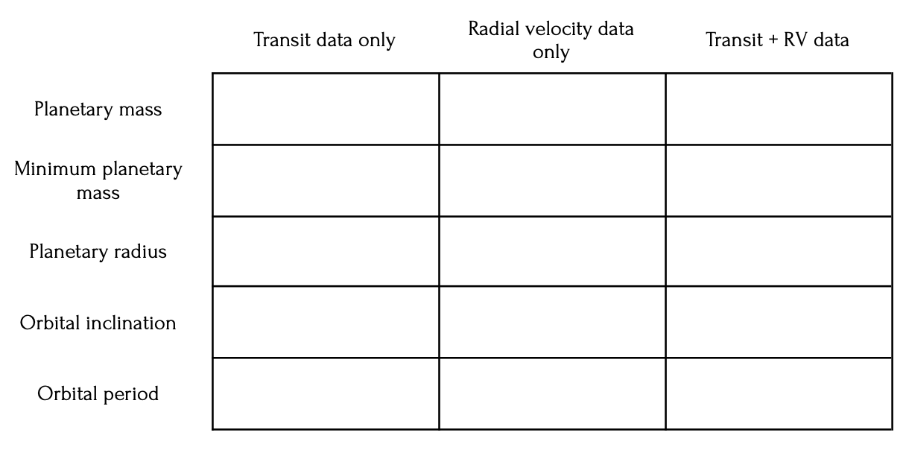
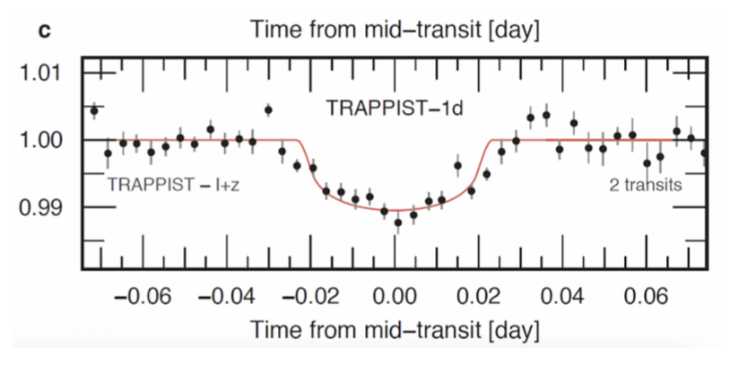

University of Michigan 2023 Invitational - Complete Questions & Answers
Study Mode Controls
Section A: Multiple Choice Questions
20 Questions - Variable Points - Total: 25 Points
1. Which of the following is not present in large quantities in Mars' atmosphere? [1 point]
a. N₂
b. Ar
c. H₂O
d. CO₂
e. None of the above
Answer: C - H₂O
Mars' atmosphere is very dry and contains very little water vapor compared to the other gases listed.
2. TOI-700 is a red dwarf of spectral class M. Which of the following is not a true statement about M-type red dwarfs that has significant implications for the formation of life around such stars? [1 point]
a. M dwarfs give off relatively high amounts of ionizing radiation.
b. M dwarfs live much longer than other stars.
c. The long time it takes M dwarfs to accrete and reach the main sequence can cause planets to form before the star is fully formed and stabilized.
d. Planets within M dwarfs' habitable zones are much more likely to be tidally locked than planets around other stars.
e. M dwarfs are much more likely to have rocky planets around them than other stars.
Answer: E - M dwarfs are much more likely to have rocky planets around them than other stars.
This statement is not true. M dwarfs are not necessarily more likely to have rocky planets than other types of stars.
3. 101955 Bennu is interesting in part because of the plumes of particles it releases. Circle all of the following hypothesized causes of these plumes. More than one answer may be circled, and partial credit may be given. [2 points]
a. Thermal fracturing
b. Meteoroid impacts
c. Small-scale tectonic activity
d. Underground air currents
e. Tidal heating
Answer: A - Thermal fracturing; B - Meteoroid impacts
These are the two main hypothesized causes of particle plumes from Bennu. Thermal fracturing occurs due to temperature changes, and meteoroid impacts can eject material.
4. Which of the following is a true statement about Enceladus? [1 point]
a. Enceladus is particularly notable for having chaos features (also called lenticulae), smooth dark spots caused by meltwater released when water ice breaks through its surface.
b. Enceladus has an extremely dense atmosphere -- even denser than Earth's -- primarily composed of water vapor thanks to collisions with Saturn's water-ice rings.
c. Enceladus is tidally heated by its eccentric orbit stemming from its orbital resonance with Dione, driving geological activity.
d. Aside from our own moon, Enceladus is the only moon that humans have ever landed a probe on.
e. Alongside Io, Enceladus is the only moon known to be geologically active.
Answer: C - Enceladus is tidally heated by its eccentric orbit stemming from its orbital resonance with Dione, driving geological activity.
Enceladus experiences tidal heating due to its orbital resonance with Dione, which maintains an eccentric orbit and drives the geological activity that creates its famous geysers.
5. Which of the following is not a true statement about Venus' high surface temperatures? [1 point]
a. Venus' tidal locking heats up one side to very high temperatures.
b. High rates of volcanism heat up the surface and atmosphere.
c. Venus' atmosphere is incredibly dense, allowing for fewer light to escape its surface.
d. Venus' atmosphere is primarily composed of CO₂, which is exceptionally good at trapping heat in its atmosphere.
e. High winds in the lower atmosphere mean that Venus' surface is nearly isothermal.
Answer: A - Venus' tidal locking heats up one side to very high temperatures.
Venus is not tidally locked to the Sun. It rotates very slowly (243 Earth days) but does rotate, so both sides experience heating.
6. Which of the following is a true statement about factors influencing TRAPPIST-1's prospects of originating and/or sustaining extraterrestrial life? Circle all correct answers. More than one answer may be circled, and partial credit may be given. [2 points]
a. Five of TRAPPIST-1's planets are known to have geological activity, which is a sign that their atmospheres could be warm enough to harbor life.
b. High stellar winds from TRAPPIST-1 have the potential to destabilize the atmospheres of many of TRAPPIST-1's planets.
c. While all of its planets are too far from TRAPPIST-1 to be in its habitable zone, tidal heating keeps the planets warm enough to harbor liquid water.
d. The orbital resonances of TRAPPIST-1's planets have the ability to keep their orbits stable for billions of years.
e. The orbital resonances of TRAPPIST-1's planets keep their orbits near-perfectly circular, keeping the flux received from their star stable and preventing tidal heating.
Answer: B - High stellar winds from TRAPPIST-1 have the potential to destabilize the atmospheres of many of TRAPPIST-1's planets; D - The orbital resonances of TRAPPIST-1's planets have the ability to keep their orbits stable for billions of years.
Red dwarf stars like TRAPPIST-1 can produce strong stellar winds that may strip planetary atmospheres, but the orbital resonances do provide long-term orbital stability.
7. Which of the following is an accurate descriptor of 67P/Churyumov–Gerasimenko? [1 point]
a. C-type asteroid
b. S-type asteroid
c. Tidally locked
d. Ejection-trajectory comet
e. Contact binary
Answer: E - Contact binary
67P/Churyumov–Gerasimenko is a contact binary comet, meaning it consists of two lobes that are in contact with each other, likely formed from two separate objects that came together at low velocity.
8. Which of the following is not thought to currently have liquid oceans on or below its surface? [1 point]
a. Europa
b. Titan
c. Mars
d. Enceladus
e. None of the above
Answer: C - Mars
While Mars may have had liquid water in the past and might have some subsurface briny water, it is not currently thought to have substantial liquid oceans like the other bodies listed.
9. Which of the following are confirmed to be present on Titan's surface? [1 point]
a. Ethane and methane seas
b. 4,000-km long canyon systems
c. Continuously erupting argon volcanoes
d. a and b
e. b and c
Answer: A - Ethane and methane seas
Titan has confirmed lakes and seas of liquid hydrocarbons, primarily methane and ethane, making it the only other body in the Solar System with stable surface liquids.
10. Which planetary system was the first roughly Earth-sized world in its habitable zone detected around? [1 point]
a. Proxima Centauri
b. TRAPPIST-1
c. TOI-700
d. Kepler-186
e. None of the above
Answer: D - Kepler-186
Kepler-186f was the first Earth-sized exoplanet discovered in the habitable zone of its star, discovered by the Kepler Space Telescope in 2014.
11. Which of the following are features thought to be present on Europa? Circle all correct answers. More than one answer may be circled, and partial credit may be given. [2 points]
a. Lenticulae, smooth dark spots and pits on the surface
b. Lineae, dark streaks crisscrossing the surface
c. Pulvae, thick water-ice dust storms roaming the surface
d. Foramen, incredibly deep and wide craters over 500 million years old
e. Penitentes, icy spikes up to 15 meters high on the equator
Answer: A - Lenticulae; B - Lineae; E - Penitentes
Europa has lenticulae (smooth spots), lineae (dark streaks from tectonic activity), and penitentes (icy spikes formed by sublimation processes).
12. How far away is Proxima Centauri from the Earth? [1 point]
a. 4.2 ly
b. 42 ly
c. 420 ly
d. 4200 ly
e. 42,000 ly
Answer: A - 4.2 ly
Proxima Centauri is the closest star to our Solar System at approximately 4.2 light-years away.
13. Which of the following is not a true statement about Europa's orbital or terrestrial features that could affect its prospects of originating and/or sustaining extraterrestrial life? [1 point]
a. The slight eccentricity of Europa's orbit causes tidal heating, driving geological processes and keeping its subsurface ocean liquid.
b. Earth-like levels of gaseous, dissolved hydrogen and oxygen are thought to exist below Europa's icy surface in part due to irradiation of ice on its surface.
c. Earth-like levels of gaseous, dissolved hydrogen and oxygen are thought to exist below Europa's icy surface in part due to volcanism and/or interactions with minerals below its surface.
d. Radioactive heating plays a dominant role in heating Europa's interior, driving geological processes and keeping its subsurface ocean liquid.
e. Europa has a deep subsurface ocean, which has the theoretical potential to harbor life.
Answer: D - Radioactive heating plays a dominant role in heating Europa's interior, driving geological processes and keeping its subsurface ocean liquid.
Tidal heating, not radioactive heating, is the dominant heat source for Europa's interior and subsurface ocean.
14. Why does Titan's atmosphere appear orange? [1 point]
a. The atmosphere is clear, but the surface of Titan is orange, and so we see it as orange.
b. Rayleigh scattering diffuses all the blue and purple light, causing it to appear orange.
c. Hydrocarbons in Titan's atmosphere produce a thick orange smog.
d. a and b
e. a and c
Answer: C - Hydrocarbons in Titan's atmosphere produce a thick orange smog.
Titan's thick atmosphere contains complex hydrocarbons that create an orange haze, obscuring the surface from view.
15. While no evidence points to Mars currently harboring life, it is known to contain some common biosignatures-- molecules that cannot exist for long periods of time in their present locations, and so must be refreshed by some active source, such as life. Which of the following are potential biosignatures known to exist in Mars' atmosphere? [1 point]
a. Methane (CH₄)
b. Sulfur dioxide (SO₂)
c. Nitrogen (N₂)
d. Dimethyl sulfide ((CH₃)₂S)
e. Argon (Ar)
Answer: A - Methane (CH₄)
Methane has been detected in Mars' atmosphere and is considered a potential biosignature because it breaks down quickly and must be replenished by some active process.
16. Which of the following is not an indicator of active tectonic activity on a planet? [1 point]
a. Volcanism
b. Crater impacts
c. Earthquakes
d. a and b
e. a and c
Answer: B - Crater impacts
Crater impacts are external events caused by meteoroids, asteroids, or comets hitting a planet's surface, not indicators of internal tectonic activity.
17. Scientists have proposed missions such as Dragonfly, a rotary-wing aircraft that would fly on other planets or moons (with rotors, in a similar manner to a helicopter.) On which of the following bodies would this concept be feasible? Circle all correct answers. More than one answer may be circled, and partial credit may be given. [2 points]
a. Titan
b. Enceladus
c. Mars
d. Europa
e. 101955 Bennu
Answer: A - Titan; C - Mars
Titan has a thick atmosphere that would support flight, and Mars has enough atmosphere for helicopter flight (as demonstrated by Ingenuity). The other bodies lack sufficient atmosphere.
18. Unlike most other common elements in exoplanet atmospheres, Argon is an unreactive noble gas, yet it is very common in planetary atmospheres -- like those of Earth, Mars, and Titan, to name a few. Where does the majority of the most common isotope of argon in planetary atmospheres, argon-36, come from? [1 point]
a. Radioactive decay from potassium in planetary crusts
b. Reactions between CO₂ and O₃ with UV rays in upper atmospheres
c. Nuclear reactions between carbon and oxygen in supernovas
d. Decomposition of Ar₂ in circumstellar disks
e. It's just always been there
Answer: C - Nuclear reactions between carbon and oxygen in supernovas
Argon-36 is produced in supernovas through nuclear fusion processes and was incorporated into planetary atmospheres during formation.
19. As mentioned in the last question, argon is very common in planetary atmospheres. However, unlike the atmospheres of the Solar System's four gas giants, the atmospheres of Earth and Mars contain argon-40, as opposed to the generally more common argon-36. Where does the majority of this argon-40 come from? [1 point]
a. Radioactive decay from potassium in planetary crusts
b. Reactions between CO₂ and O₃ with UV rays in upper atmospheres
c. Nuclear reactions between carbon and oxygen in supernovas
d. Decomposition of Ar₂ in circumstellar disks
e. It's just always been there
Answer: A - Radioactive decay from potassium in planetary crusts
Argon-40 is produced by the radioactive decay of potassium-40 in planetary crusts and is released into the atmosphere over geological time.
20. Which of the following are true statements about Mars' geological features? Circle all correct answers. More than one answer may be circled, and partial credit may be given. [2 points]
a. Mars' surface soils are partially composed of perchlorate salts, in concentrations that are toxic to humans.
b. Mars' volcano Olympus Mons is the largest mountain of any planet in the Solar System.
c. Mars has over 40,000 craters with a diameter of 5 kilometers or more, as a result of the thin atmosphere failing to erode them.
d. Mars' poles are so big that during a pole's winter, it freezes nearly a quarter of Mars' atmosphere into CO₂ ice (dry ice).
e. Mars' soil has many elements, including magnesium, potassium, sodium, and iodine, that are found in soils on Earth and are thought to be necessary for plant growth.
Answer: All answers are correct (A, B, C, D, E)
All five statements about Mars' geological features are accurate, including the presence of toxic perchlorates, Olympus Mons being the largest mountain, numerous craters, seasonal CO₂ freezing, and soil composition suitable for plant growth.
Section B: Short Answer Questions
9 Questions - Variable Points - Total: 15 Points
1. In 2005, the Spitzer Space Telescope was the first telescope to directly capture light from exoplanets. What wavelengths of light does it detect? [1 point]
a. Ultraviolet
b. Visible
c. Infrared
d. b and c
e. a, b, and c
Answer: C - Infrared
The Spitzer Space Telescope was an infrared observatory, designed to detect infrared radiation from astronomical objects.
2. You observe two transit detections corresponding to two planets transiting a given star. (Assume both planets transit across the center of the star, and that both planets are the same distance from the star, however unrealistic that may be.) The second transit has a dip in flux equal to four times the dip in flux from the first transit. What is the ratio of the radius of the first planet R₁ to that of the second planet R₂? [1 point]
a. 16R₁ = R₂
b. 4R₁ = R₂
c. 2R₁ = R₂
d. R₁ = R₂
e. R₁ = 2R₂
Answer: C - 2R₁ = R₂
Transit depth is proportional to the square of the planet radius. If the second transit has 4× the depth, then R₂² = 4R₁², so R₂ = 2R₁.
3. What is the primary reason 101955 Bennu was chosen for the OSIRIS-REx mission? [1 point]
a. There is no reason to prefer any particular asteroid, and Bennu was simply the closest to Earth to study.
b. Bennu is very notable for having an atmosphere, albeit thin, and OSIRIS-REx is designed to capture the gaseous atmosphere for study.
c. Bennu has a very high risk of crashing into Earth in 2260, and OSIRIS-REx is designed to redirect it.
d. Bennu is a very primitive asteroid, allowing us to see what early planetary makeup might have looked like.
e. None of the above
Answer: D - Bennu is a very primitive asteroid, allowing us to see what early planetary makeup might have looked like.
Bennu is a carbonaceous asteroid that has remained relatively unchanged since the early Solar System, making it an excellent target for studying primordial materials.
4. Planet X orbits its host star at an equilibrium temperature T_eq. (Assume Planet X's only heat source is light from its host star.) If Planet X suddenly teleported to a location twice as far away from its host star as it was before, what will its new equilibrium temperature be? [1 point]
a. (2)T_eq
b. (√2)T_eq
c. T_eq
d. (1/√2)T_eq
e. (1/2)T_eq
Answer: D - (1/√2)T_eq
Equilibrium temperature is proportional to the fourth root of the stellar flux received. Since flux decreases as 1/r², doubling the distance reduces flux by 1/4, so temperature decreases by (1/4)^(1/4) = 1/√2.
5. Which of the following is not the name of a group of asteroids or minor planets in the Solar System? [1 point]
a. Trojans
b. Earth-crossers
c. Centaurs
d. Plutinos
e. Tauroids
Answer: E - Tauroids
Tauroids is not a recognized group of asteroids or minor planets. The others are all real classifications.
6. Suppose we are attempting to identify the orbital features of a planet. Given each of the possible sources of data about the planet, fill in the boxes corresponding to which planetary or orbital features we can identify. (Assume we know all necessary properties of the host star, such as mass, luminosity, and radius. Assume light emitted from the star is isotropic. Assume all transits pass through the center of the host star, and this planet is known to not have an atmosphere.) Partial credit may be given in this problem. [5 points]

Table showing different detection methods and what planetary properties they can determine
Answer:
Transit data only: Planetary radius, Orbital inclination, Orbital period Radial velocity data only: Minimum planetary mass, Orbital period Transit + RV data: Planetary mass, Planetary radius, Orbital inclination, Orbital period
7. Which of the following statements about observational biases in exoplanet detection are true? More than one answer may be circled, and partial credit may be given. [2 points]
a. Transit detection methods are better at detecting larger planets.
b. Transit detection methods are better at detecting planets further from their stars.
c. Radial velocity methods are better at detecting more massive planets.
d. Radial velocity methods are better at detecting planets further from their stars.
e. Direct imaging methods are better at detecting planets further from their stars.
Answer: A - Transit detection methods are better at detecting larger planets; C - Radial velocity methods are better at detecting more massive planets; E - Direct imaging methods are better at detecting planets further from their stars
These are the correct observational biases: larger planets create deeper transits, more massive planets cause larger stellar wobbles, and planets farther from their stars are easier to resolve in direct imaging.
8. Which of the following are correct differences between the JWST and TESS satellites? More than one answer may be circled, and partial credit may be given. [2 points]
a. JWST primarily views in the near-infrared, while TESS views exclusively in the visible range.
b. JWST has 29 different passbands (wavelength ranges) it can observe through in the infrared, while TESS only has 1.
c. JWST orbits the Sun at the L2 Lagrange point, while TESS orbits the Sun at the L4 Lagrange point.
d. JWST is a ground-based telescope, while TESS is a space-based telescope.
e. JWST has a small field of view of roughly 3' x 3', while TESS can observe a substantial portion of the sky at any given time.
Answer: A - JWST primarily views in the near-infrared, while TESS views exclusively in the visible range; E - JWST has a small field of view of roughly 3' x 3', while TESS can observe a substantial portion of the sky at any given time.
JWST is an infrared telescope with a small field of view, while TESS is a visible-light survey telescope with a wide field of view for finding transiting exoplanets.
9. Which of the following are valid methods of determining the composition or structure of a planet's atmosphere? [1 point]
a. Transit spectroscopy, where the atmosphere of a planet is observed while a planet is only partially transiting its star
b. Eclipse spectroscopy, where the light reflected from a planet is directly observed
c. High-resolution spectroscopy, where fainter spectra of the planet are observed when its orbital elements are detected by the radial velocity method
d. a and b
e. a, b, and c
Answer: E - a, b, and c
All three methods are valid for studying exoplanet atmospheres: transit spectroscopy, eclipse spectroscopy, and high-resolution spectroscopy.
Section C: Image Analysis Questions
1 Question - 10 Points Total
1. The image below shows a transit by TRAPPIST-1d of its host star. The image shows the flux, normalized to the average star flux, plotted as a function of time. [10 points total]

Transit light curve showing flux vs. time for TRAPPIST-1d
(a) Estimate the amount of time between the start of ingress and the end of egress, in days. Don't worry about the exact value, so long as you show your work. Partial credit may be given in this problem. [1 point]
(b) The bottom of the light curve shown has a slight upwards curve, which is due to a phenomenon called limb darkening. In your own words, explain what limb darkening is and why it would cause the curved shape we observe in the image. Partial credit may be given in this problem. [2 points]
(c) On the graph provided on the answer sheet, sketch the shape the transit light curve would have if limb darkening did not exist. Don't worry about the impact parameter of the transit, b (i.e., assume b = 0). [2 points]
(d) Estimate the radius of TRAPPIST 1-d, in units of host star radii. Partial credit may be given in this problem. (Once again, assume b = 0). [2 points]
(e) Now imagine we wanted to figure out more than just the radius of TRAPPIST 1-d, using just transit data of this planet. Name two other planetary or orbital properties we could figure out with just this data (assuming we know all necessary information about its host star), and how we might find these properties. Partial credit may be given in this problem. [3 points]
Answers:
(a) Anywhere between 0.04 to 0.06 days is a valid answer. This can be found by measuring the length from one edge of the dip to the other.
(b) Limb darkening is an optical effect seen in stars where the central part of the disk appears brighter than the edge, or limb. This occurs because when looking at the center of the star, we can see deeper into the star where temperatures are higher, making it appear brighter. When looking at the limb, we only see the surface layers which are cooler. This causes a bigger dip in flux when the center of the star is blocked by a planet, creating the curved shape in the transit.
(c) The correct answer would show a rectangle, with the width equal to the existing dip and a depth equal to the maximum depth of the existing dip (flat bottom instead of curved).
(d) Because δ = (Rp/R*)² = 0.01, Rp = 0.1 R*. The planet radius is 0.1 times the stellar radius.
(e) Valid answers include: The orbital period (by measuring time between transits), the orbital inclination (must be close to 90° if transiting), atmospheric composition (through absorption/emission spectrum during transit), or resonant state (by measuring transit time variations over many orbits).
This transit analysis demonstrates how much information can be extracted from photometric observations of exoplanet transits, including planetary size, orbital characteristics, and even atmospheric properties.
Study Tips
Focus on understanding the underlying physics and planetary science concepts rather than just memorizing facts.
Pay special attention to:
Exoplanet detection methods and their observational biases
Planetary formation and evolution processes
Atmospheric composition and dynamics
Tidal heating and orbital mechanics
Astrobiology and habitability criteria
Space mission design and instrumentation
Transit photometry and light curve analysis
Stellar properties and their effects on planetary systems
This study guide covers all questions from the 2023 University of Michigan Solar System exam. Good luck with your preparation!